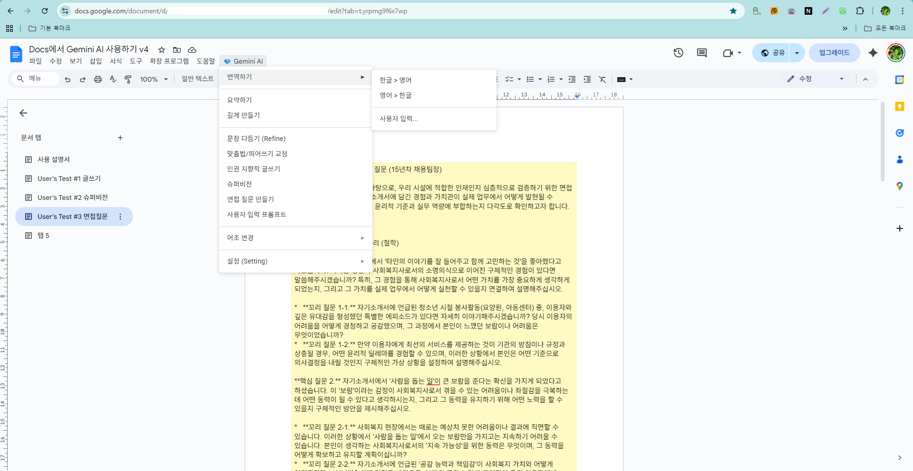

Docs에서 AI 쓰기 (Gemini AI in Docs)
구글 문서 도구에 인공지능 기능을 심어, 문서 내 영역 선택만으로 번역, 요약, 문장 확장, 톤앤매너 변경을 수행할 수 있도록 만든 도구입니다. Docs를 떠나지 않고도 Gemini의 강력한 기능을 업무 프로세스에 바로 녹여낼 수 있습니다.
✨
사회복지사 전문 글쓰기
인권지향적 글쓰기, 면접 질문 만들기, 슈퍼비전하기 등 실무에 최적화된 작성을 지원합니다.
📝
자동 요약 및 확장
긴 문장을 핵심 요약하거나, 간단한 아이디어를 풍성한 문장으로 늘려줍니다.
🌍
다언어 번역
선택한 영역을 즉시 다른 언어로 번역하여 문서에 삽입합니다.

기능 선택 메뉴 창
💡 실행 가이드
범위를 선택하고 상단 메뉴의 Gemini AI 버튼을 클릭하여 원하는 작업을 수행해 보세요. 개인화를 위해서는 Google Cloud Console 또는 AI Studio에서 본인의 API 키를 발급받아 환경 설정에 입력해야 합니다.